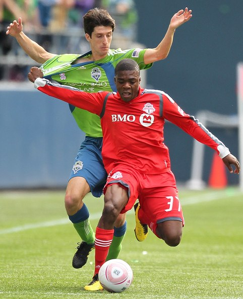
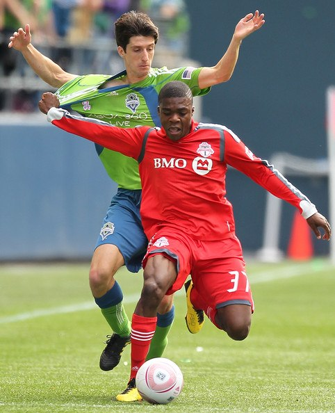

KNOW ABOUT US
SC Waterloo Region is a professional Canadian soccer team. The team is a member of the Canadian Soccer League, an unsanctioned league.
The club also has teams in the Canadian Soccer League Reserve Division and the Ontario Soccer League. The current head coach is Lazo Džepina,
and the club's President is Tony Kocis. SC Waterloo is also sponsored by JAKO Sport.
We entered the 2014 season full of optimism, and with a newly designed logo, as both our Pro and 2nd Division teams were defending champions.
However, injuries quickly made it obvious how difficult it would be to defend our titles.
The Pro team had a difficult start to the campaign, but a late push saw us make the playoffs and salvage the season, but it was still disappointing to miss out on our title defence.
The 2nd Division team made club history by finishing in the top 4 to clinch our first ever home playoff berth. The team managed to make it to the finals again.
 
